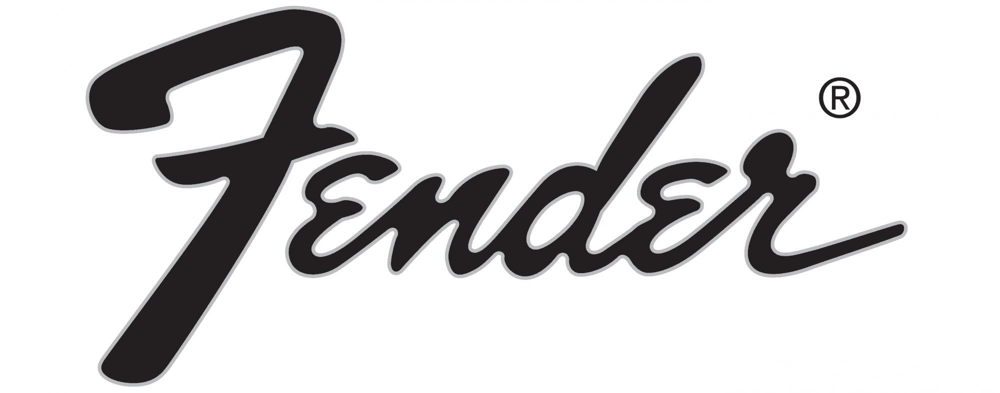
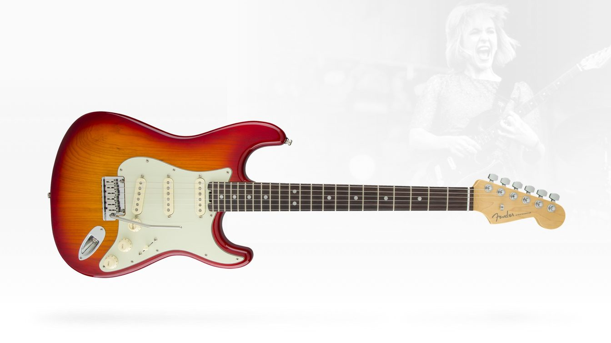
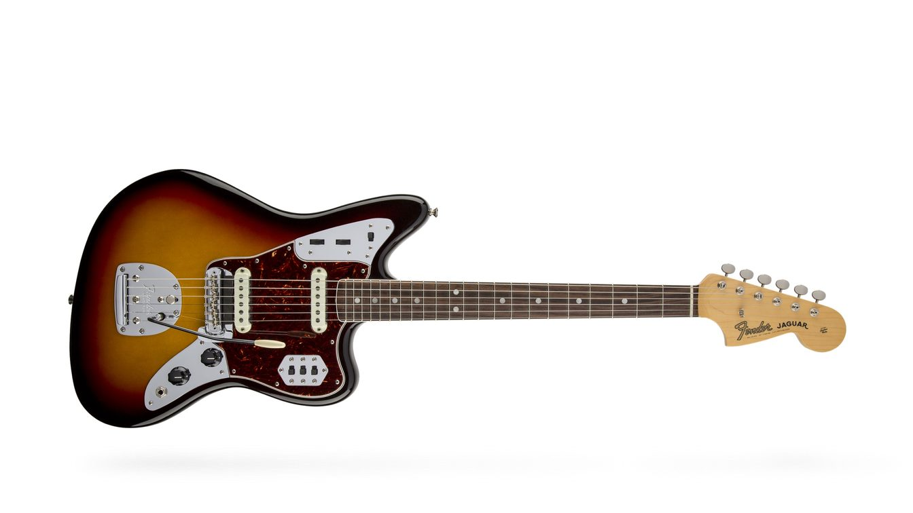
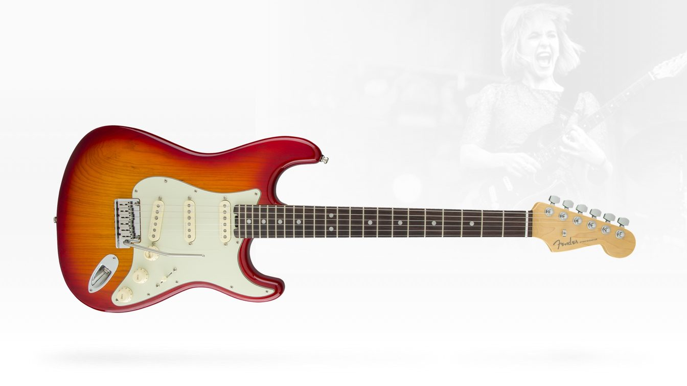
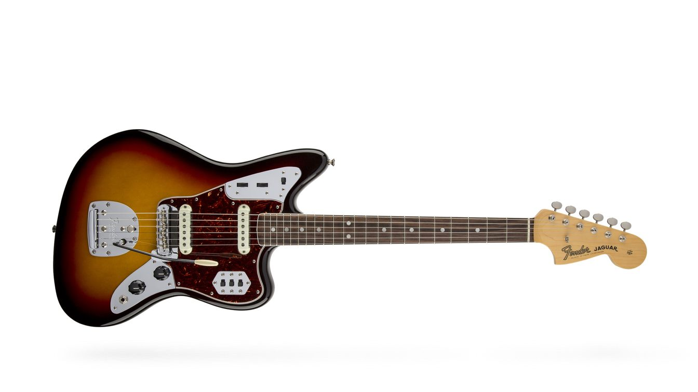

|
Fender Musical Instruments Corporation (FMIC), commonly referred to simply as Fender, is an American manufacturer of stringed instruments and amplifiers. Fender Guitars
are among the most recognized in the world. Fender is famous for its solid-body electric guitars and bass guitars, such as the Stratocaster (also known as the "Strat"), Telecaster
(also known as the "Tele"), Precision Bass (also known as the "P-Bass"), and the Jazz Bass (also known as the "J-Bass"). Its headquarters are in Scottsdale, Arizona. The company,
previously named the Fender Electric Instrument Manufacturing Company, was founded in Fullerton, California, by Clarence Leonidas "Leo" Fender in 1946.
The company is a privately held corporation with Andy Mooney serving as the Chief Executive Officer. The company filed for an initial public offering in March 2012, but this was
withdrawn five months later. In addition to its Scottsdale headquarters, Fender has manufacturing facilities in Corona, California (US) and Ensenada, Baja California (Mexico).
The company also manufactures acoustic guitars, electric basses, mandolins, banjos, and electric violins, as well as guitar amplifiers, bass amplifiers, and PA (public address) equipment.
Other Fender brands include Squier (entry level/budget), Jackson, Charvel, EVH guitars and amplifiers in collaboration with Eddie Van Halen, and the manufacture and distribution of Gretsch
guitars under license. |
 


